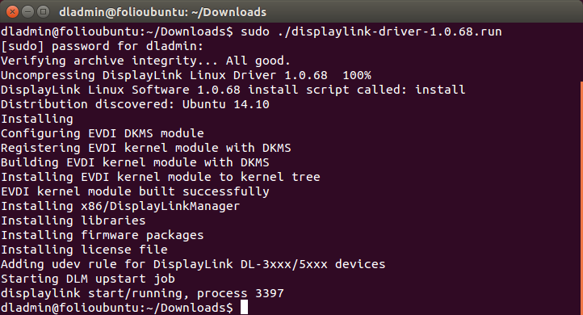

Displaylink on Ubuntu 18.04¶
I want to use additional monitors and I got a ThinkPad Hybrid USB-C with USB-A Dock It looks like this:
{kind=link}
On the back side it says ‘Plug and Display’ … but that doesn’t work if you are linux.
Following shady steps are required:
1. Install the offical drivers¶
Get the official drivers and install them. The installer bash script (apparently generated using makeself contains an eval statement on a bunch of binary.. and it needs root permissions. Hmmm…
The installer seems to be loading a kernel module. The following is taken from the official site:
{kind=link}
2. Disable UEFI/Secure Boot¶
UEFI/Secure Boot needs to be disabled from the BIOS setup. This means that we are allowing untrusted code to be run.
3. Perfomance Issues / CPU Load¶
On top of that, CPU usage is extremely high:
$ ps -p `get-pid displaylink` -o %cpu,%mem,cmd %CPU %MEM CMD 35.8 0.7 /opt/displaylink/DisplayLinkManager
And when I tap a few keys on the keyboard, it goes up to 50% and sometimes even more. Not sure what is going on.
I really want to use additional monitors but I am not sure if I should use this product. Maybe someone more wiser out there can help. _I need healing!_.
Appendix¶
get-pid () { local name=$1 ps aux | grep -i $name | grep -v grep | awk '{print $2}' }